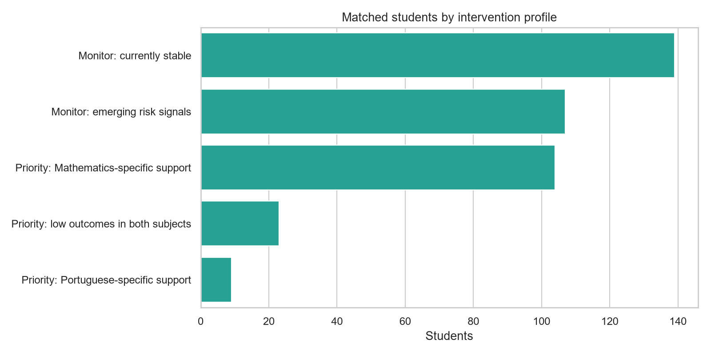
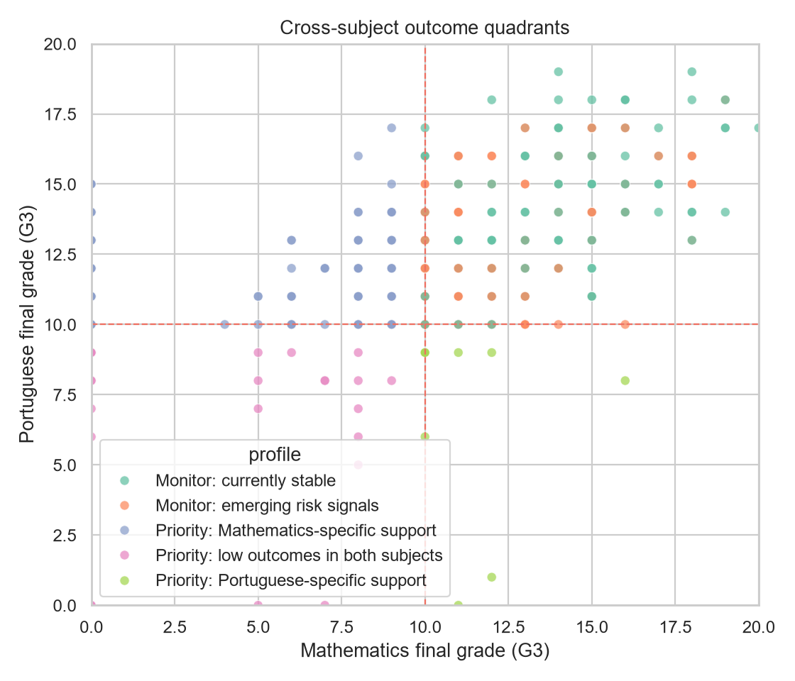
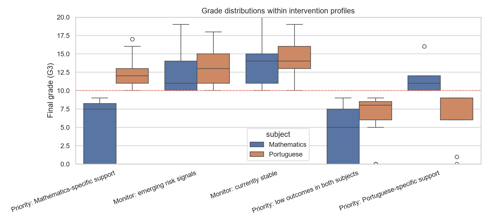
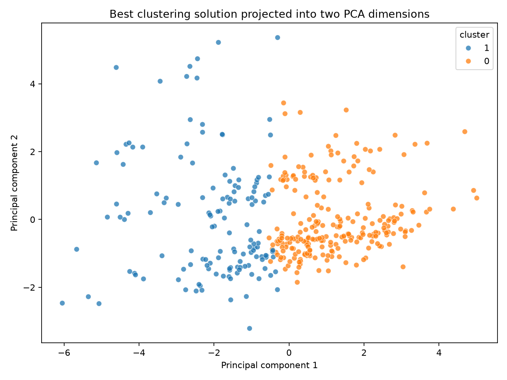
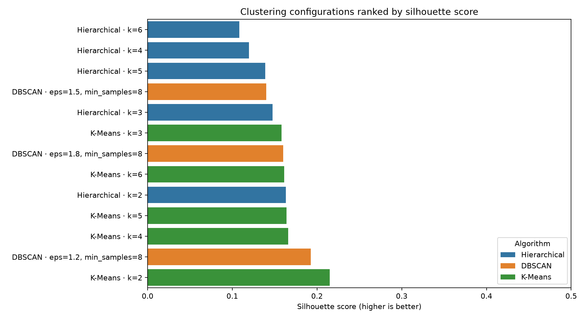
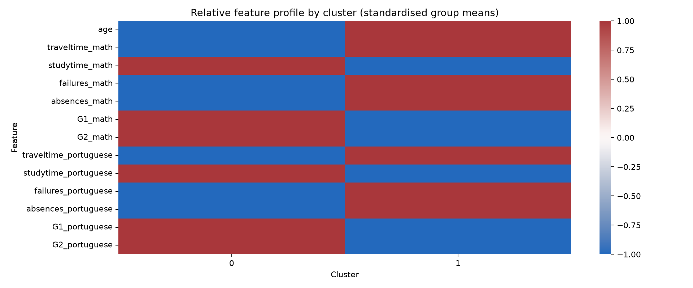
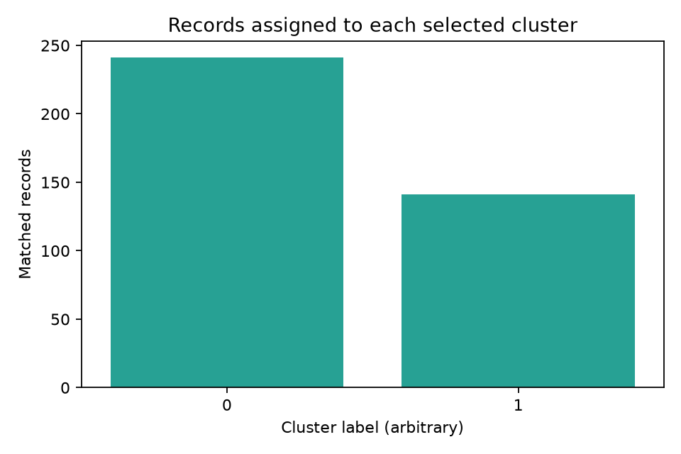

Low final outcomes in Math and Portuguese
02 / INTERVENTION GROUP PROFILING
Turn evidence into
support conversations.
This separate descriptive lens compares matched Mathematics and Portuguese records to help educators prioritise human review without treating a profile as a diagnosis.
The decision
Use profiles to ask better support questions — never to grade, exclude or discipline a student automatically.
MATCHED RECORDS
382
from 395 Mathematics and 649 Portuguese records
5profiles< 10screening threshold
THE BIG PICTURE
Five transparent support groups
Profiles are assigned in a fixed order using final-grade outcomes and observable risk signals.
Low Math outcome with Portuguese outcome above threshold
Monitor for failures, absences or weak progression
No configured screening signal present
PROFILE EVIDENCE
Where should review begin?
The charts show group size, cross-subject outcomes and the distribution behind each profile.
Data-quality note
The merge follows the supplied R key. It is not a unique student ID, so these are matched records for review, not verified identities.
PROFILE COUNTS
n = 382Group sizes at a glance

Insight: Mathematics-specific support is the largest priority group; 23 matched records show low outcomes in both subjects.
CROSS-SUBJECT EVIDENCE
Low-grade outcome quadrants

Rule: Dashed lines mark the transparent G3 < 10 threshold. This is a screening view, not a diagnosis.
GROUP COMPARISON
Grade distributions by profile

Use carefully: A profile starts a conversation about support; it does not establish a cause.
UNSUPERVISED ML CHECK
Do natural similarity groups support the lens?
We compared three clustering families, then interpreted the selected groups without using final grades to create them.
K-Means · k = 2
0.215 silhouette
Why selected? It had the highest valid silhouette score among the tested K-Means, hierarchical and DBSCAN configurations.
241cluster 0141cluster 1
CLUSTER VISUALISATION
G3 excluded from clusteringSelected groups in PCA space

Interpretation: Cluster 1 has lower average grades and more failures/absences, but cluster labels are exploratory and not rankings.
K-MeansCentroid groups · tested k = 2–6
HierarchicalWard similarity tree · tested k = 2–6
DBSCANDensity groups · noise detection
Method note: Clustering used standardised age, attendance, study time, failures and G1/G2 progression features. `G3` was not used to form clusters; it was used only to describe the groups afterwards.
CLUSTER QUALITY & INTERPRETATION
Evidence behind the grouping
These diagnostics show why the clustering result is usable as exploratory evidence, while keeping its limitations visible.
ALGORITHM COMPARISON
Silhouette · higher is betterSeparation across configurations

Selection: K-Means k=2 had the strongest valid score among the tested configurations.
FEATURE INTERPRETATION
How clusters differ

Reading the heatmap: Values show relative group means, not causal effects or student rankings.
GROUP BALANCE
Cluster sizes are visible

Audit: Both selected clusters are large enough to inspect; small clusters would need extra caution.
Stability check passed
The selected K-Means assignments were repeated with 10 seeds. Mean Adjusted Rand Index ≈ 0.989 and minimum ≈ 0.979, indicating stable assignments for this data and feature policy.
FROM SIGNAL TO SUPPORT
Keep the human in the loop
A responsible workflow turns a pattern into context-aware support rather than an automatic label.
LIMITATIONS Historical cross-sectional data · Merge key is not a unique ID · Thresholds are project screening choices · No profile should drive grading, exclusion or discipline